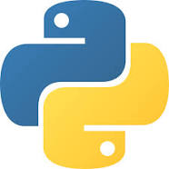

PYTHON:
python is used for server-side web development,
software development, mathematics, and system scripting
and is popular for Rapid Application Development and as a scripting
|
 |
JAVA_SCRIPT:
JavaScript is a scripting language that enables you
to create dynamically updating content, control multimedia,
animate images, and pretty much everything else.
|
.png) |
C#:
C# (/ˌsiː ˈʃɑːrp/ see SHARP) is a general-purpose
high-level programming,language supporting multiple paradigms.
C# encompasses static typing,strong typing, lexically scoped, imperative.
|
.png) |
SWIFT:
Swift is a high-level general-purpose, multi-paradigm, compiled
Swift is a high-level general-purpose, multi-paradigm, compiled
Swift compiles to machine code, as it is an LLVM-based compiler.
|
.jpg) |
JAVA:
Java is a multi-platform, object-oriented, and network-centric language
that can be used as a platform in itself. It is a fast, secure, reliable
programming language for coding everything and enterprise software.
|
.png) |